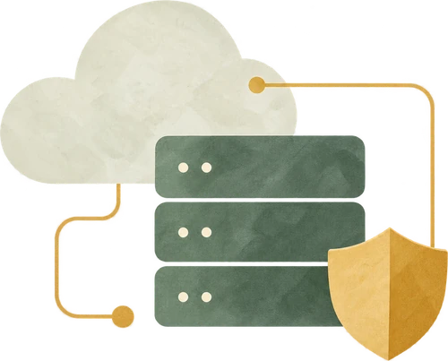
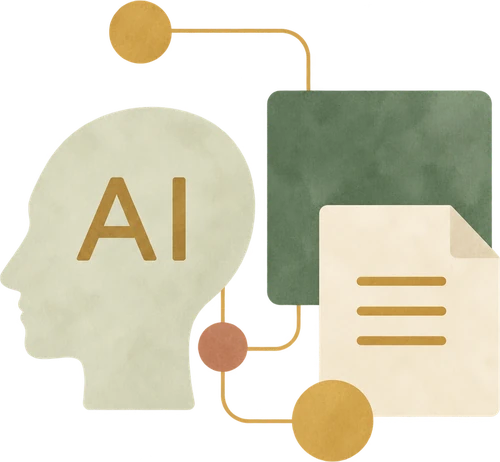

インフラ・セキュリティの
課題を整理し、更改を進めたい
要件整理・技術選定から設計・構築まで、技術リードとして担当します。
「手が足りず進められない」「何から着手すべきか
整理したい」といったお悩みもご相談ください。
まずは取り組みたいことをご相談ください

要件整理・技術選定から設計・構築まで、技術リードとして担当します。

アプリとクラウド基盤の実装、利用状況の分析・改善を担当します。
課題と体制を伺い、既存ベンダーとの分担も踏まえて、担当できる工程・役割を一緒に考えます。
情報やデータを整理・可視化し、現状を捉える。
費用や運用の手間を踏まえ、目的に合う方法を選ぶ。
使い方や利用者の声を確かめ、使いにくさを減らす。
企画・経営提案から設計・構築・導入・運用まで。自ら実装する技術リードとして一貫して担当。
自らアプリとAWS基盤の設計・実装、運用・改善を担当。
AI選定・経営への説明から全社展開までを主導。指標設計・分析・活用支援を一貫して担当。
お客様にITを提供する立場と、自社の業務をITで改善する立場の両方を経験
インフラ構築
プロジェクト管理
社内ITの企画・導入・運用
AI・データ活用
開発基盤の整備
趣味でAndroidやmacOS向けのアプリを作っています。
話した内容を文字にし、読みやすく整えて入力する音声入力アプリです。Android版とmacOSのデスクトップ版を開発しています。
人生の残り時間や、大切な人やペットと過ごせる時間の目安を表示するmacOSのデスクトップアプリです。一緒に叶えたいことと次の一歩を記録し、誰とどう過ごしたいかを見える形にします。